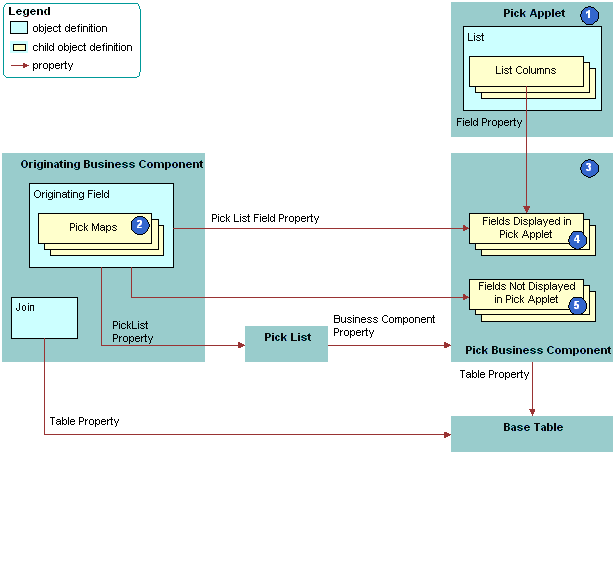

How Siebel CRM Constrains a Dynamic List
You can configure Siebel CRM to dynamically filter a pick applet to display only records that include a field value that matches a corresponding field in a record of the originating business component. This configuration is known as constraining a list. For example, you can define the pick applet for a contact that an applet that displays quotes calls so that the pick applet only displays contacts that Siebel CRM associates with the account for the current quote. For more information, see Constraining a Dynamic List.
The following figure describes how Siebel CRM constrains a dynamic list. It includes details of the pick business component that the second figure in the section About Dynamic Lists describes.
Explanation of Callouts
Siebel CRM uses the following objects to constrain a dynamic list:
Pick applet. Displays only contacts that contain the same account, account Id, and account location as the quote. To do this, you define a constraint pick map as a child of the Contact Last Name field. This is in addition to the predefined copy pick map object definitions that define pick behavior.
Pick map. The following types of pick maps are available:
Copy pick map. Updates the current record in the originating business component with information from the pick business component. For more information, see Originating Business Component of a Dynamic List.
-
Constraint pick map. Displays only the records that contain a matching value in a corresponding field in the originating and the pick business component. A constraint pick map causes Siebel CRM to filter the records that it displays in the pick applet. For more information, see How Siebel CRM Constrains a Dynamic List.
If the Constrain property of the pick map is:
TRUE. The pick map is a constraint pick map.
FALSE. The pick map is a copy pick map.
Pick business component. The business component that the pick applet references. Siebel CRM displays data from fields in this business component in the list columns of the pick applet.
Fields that Siebel CRM displays in the pick applet. Enters data into the list columns in the pick applet. The Field property of the corresponding list columns in the pick applet reference these list columns. Siebel CRM includes some of the same fields in the Pick List Field property of Pick Map object definitions. These fields have a role in updating corresponding fields in the originating business component.
Fields that Siebel CRM does not display in the pick applet. Siebel CRM does not display these fields in list columns that reside in the pick applet, but it does include some of these fields in the Pick List Field property of the object definitions for a Pick Map. Such fields have a role in updating corresponding fields in the originating business component.
Constraint Pick Map Acts as a Predefault Value
A constraint pick map uses the new record that Siebel CRM adds from a pick applet as a predefault value. For example, assume the user chooses a record in the Quotes list that is associated with an account, and then clicks the Opportunities control in the form for the quote. The user then adds a new opportunity in the Pick Opportunity dialog box with no account included. Siebel CRM assigns the new opportunity to the constrained account. This situation occurs if the Constrain property of the Account Id pick map of the Opportunity field in the Quote business component is TRUE.
Foreign Key Field Must Be Constrained
If the constrained field references a joined table in the pick business component, then the foreign key field must be constrained. If the foreign key field is not constrained in this situation, and if the user creates a new record in the pick applet, then Siebel CRM displays an error that is similar to the following:
This operation is not available for read-only field